- 在出现的页面中点击”远程桌面”
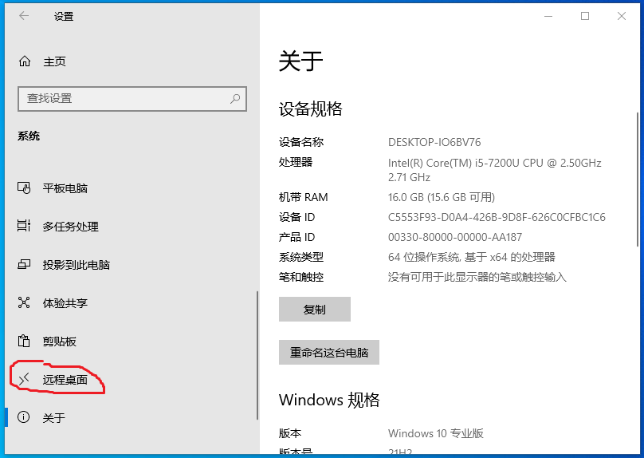
- 启动远程桌面选择”开”
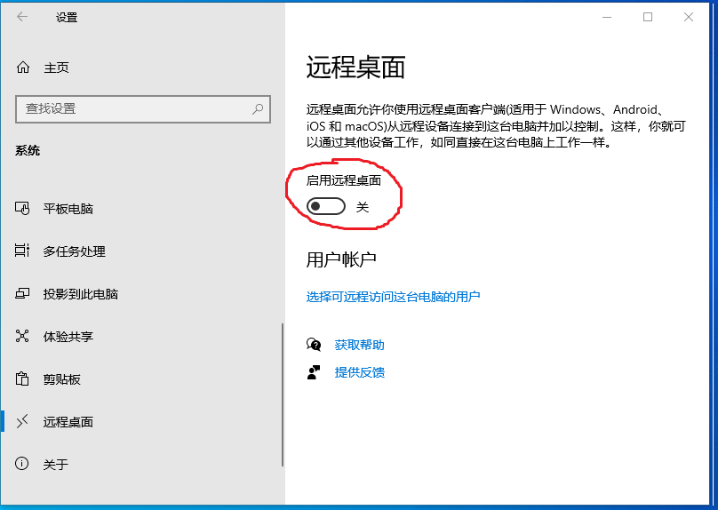
- 打开”控制面板”——>选择”系统和安全”
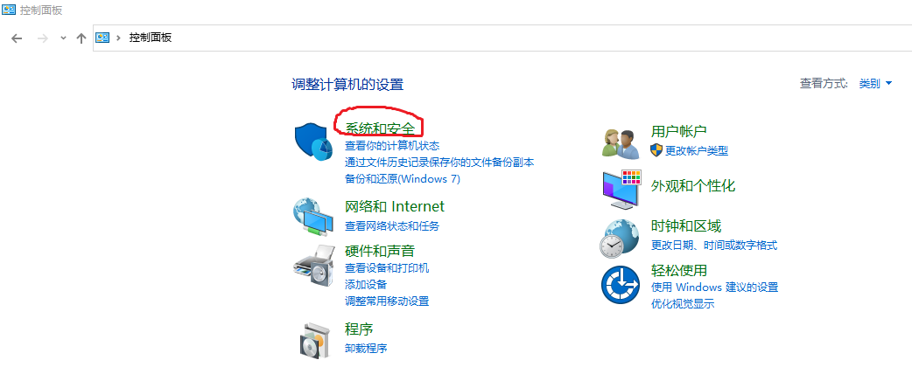
- 点击”允许远程访问”
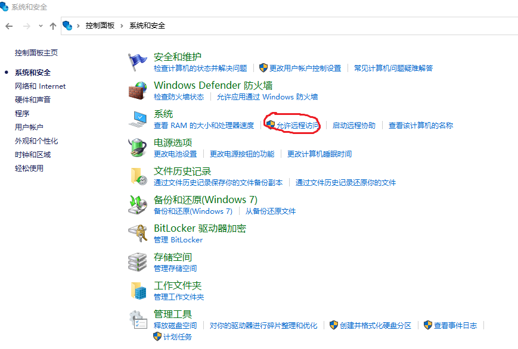
- 选择”允许远程协助连接这台计算机”和”允许远程连接到此计算机”
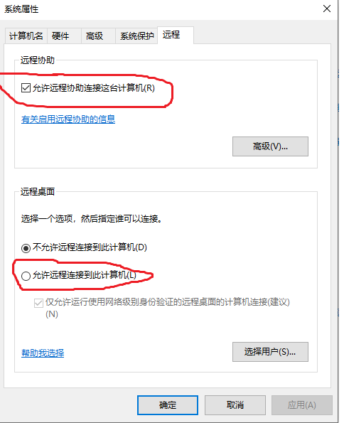
在工作中我们常常会一边找资料一边写文档，所以就衍生出对屏幕扩展功能的需求。当然，这个功能可以通过买个显示器配合笔记本就完全可以实现，但是对科研工作者来说，利用笔记本做实证分析会有些力不从心，而使用台式机就需要扯下连接笔记本的显示器连接线，然后插到台式机上。每次在台式机和笔记本之间切换不仅会加速二者接口和链接线的老化，还会增加我们的体力劳动，最麻烦的是我们还得用U盘把实证结果拷贝到笔记本上再开展论文写作。要避免这些麻烦最好的办法是将你的台式机主机设置成一台服务器，通过笔记本控制它，既能避免切换屏幕，也能有效实现数据共享。 下面介绍一下如何实现这个小目标。
要让其他用户远程访问你的电脑，首先要开启远程桌面，允许其他电脑通过网络连接并控制你的电脑。具体步骤如下：
- 右击”此电脑”，选择”属性”

- 在出现的页面中点击”远程桌面”
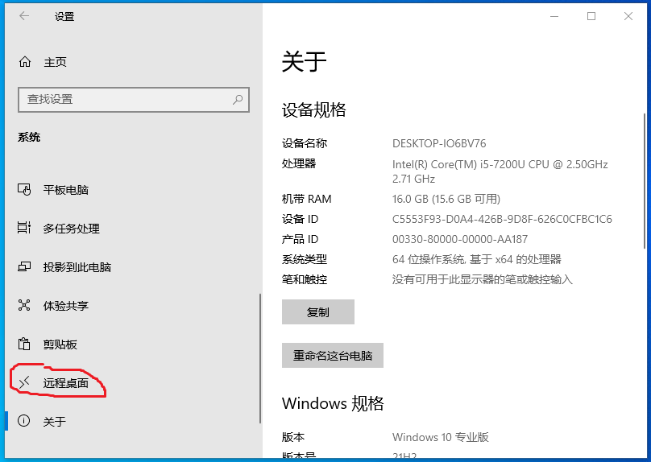
- 启动远程桌面选择”开”
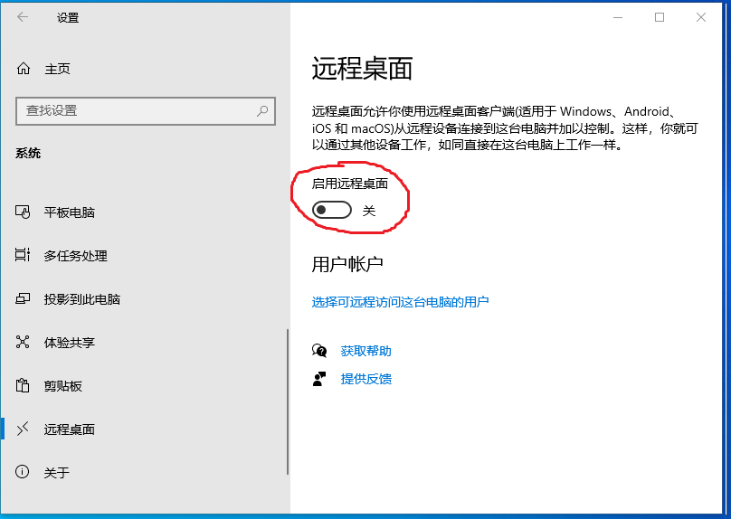
- 打开”控制面板”——>选择”系统和安全”
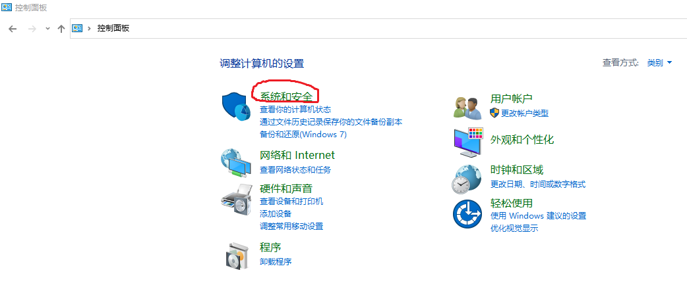
- 点击”允许远程访问”
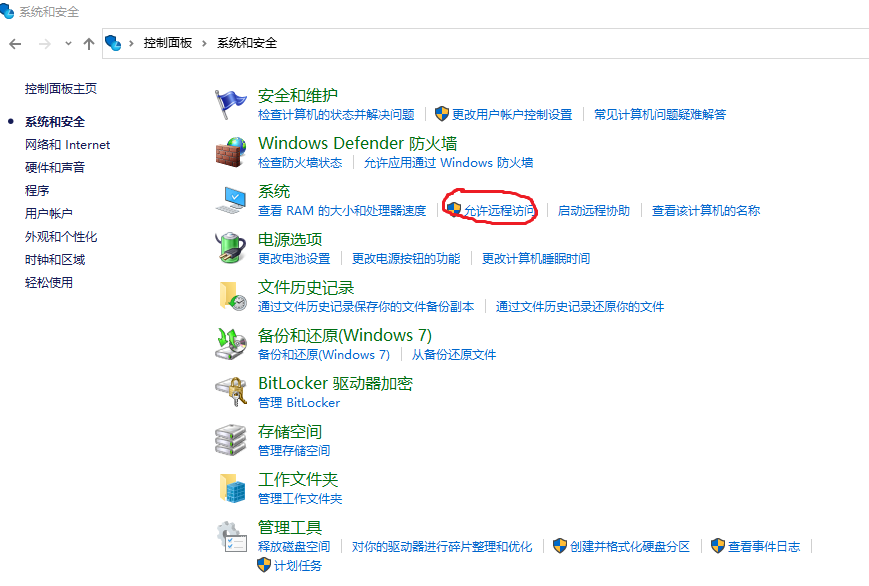
- 选择”允许远程协助连接这台计算机”和”允许远程连接到此计算机”
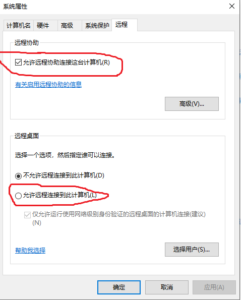
要通过远程来访问你的台式机，需要设置台式机登录用户名和密码（为了保证网络安全），这个很简单，你可以查看这个连接：http://www.ujiaoshou.com/xtjc/175319872.html 。比如我的登录用户名是：Administrator，密码就不在展示了，如下图：
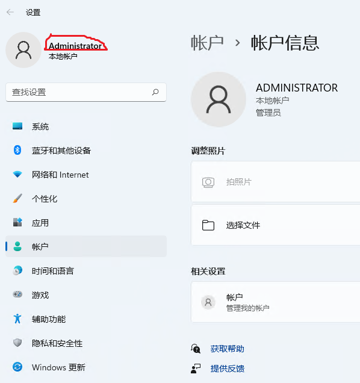
局域网内访问是指访问台式机的电脑和台式机主机连接的是同一个网络，比如连接相同wifi，那么就可以将台式机主机作为服务器通过ip来访问。具体如下：
- 在任务栏搜索空中搜索”远程桌面连接”，并将其创捷快捷方式到桌面，方面以后使用。
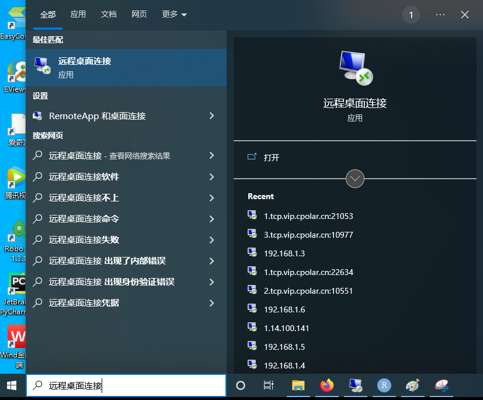
- 查看台式机ip。 在台式机上打开cmd命令窗口，输入：ipconfig，敲击回车键，就可以查到台式机ip地址。
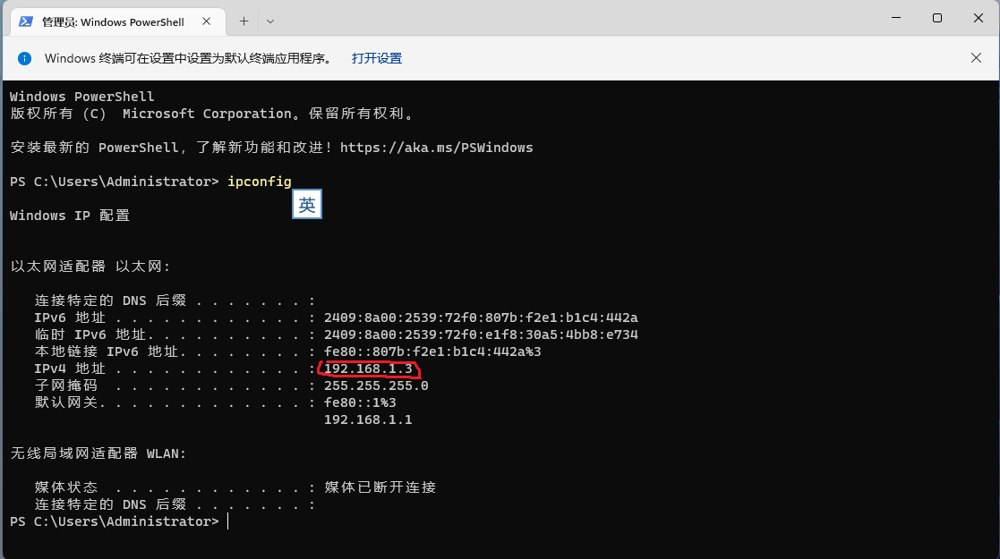
3.打开”远程桌面连接”，输入Ip地址和用户名。
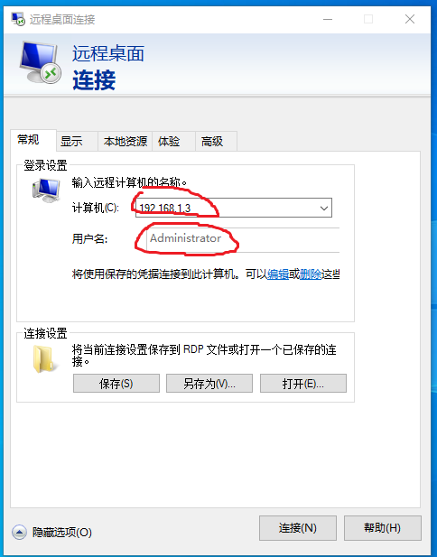
- 点击连接后，就会提示你输入登录密码，按照提示填写就可以访问远程台式机。
外部公网访问是指访问计算机和被访问的服务器不在同一网络连接上，据说要实现访问需要设置路由器的公网ip，并允许其他网络访问改IP，这么复杂的设置寡人不会呀，也没找到合适的资料。
然而，我发现 cpolar可以实现内网穿透，帮你实现这个功能，这样你不管是在北京、上海还是远在国外，都可以远程连接到你的台式机。
- cpolar注册与安装
请看官网文档，点这儿，你也可以参考：https://blog.csdn.net/LisaCpolar/article/details/124249600?spm=1001.2014.3001.5501
2.配置固定TCP端口地址
都有现成教程，我就直接上链接：https://blog.csdn.net/LisaCpolar/article/details/124249674?spm=1001.2014.3001.5501
- 通过远程桌面连接访问
上面两个步骤主要是为了拿到访问地址，现在连接和区域网一样，不会就看链接：https://blog.csdn.net/LisaCpolar/article/details/124249720?spm=1001.2014.3001.5501
如果你去外地十天半个月，让你的台式机一直开着也不是个事（电费和损耗也着不住），当然你可以通过远程关机，但关机后，在外地想用的时候没人给你去按开机键也用不了呀。所以，让台式机定时开关机就非常重要。
- 定时开机
设定每天开机时间，直接上B站看教程：https://www.bilibili.com/video/BV1kS4y1J7aJ/?spm_id_from=333.880.my_history.page.click&vd_source=1312148eed03d2915d234e39fdc4c179&t=1.3
- 定时关机
实现了定时开关机，就解决了无人值守的问题，能保证你的台式机每天开机一次，就不用担心你不在没人给你按开机键了。而且你可以通过手机访问你的台式机，如果今天不用电脑，你直接在手机上就可以关机。大家根据自己的情况选择吧，局域网连接完全可以解决你切换显示屏的问题。